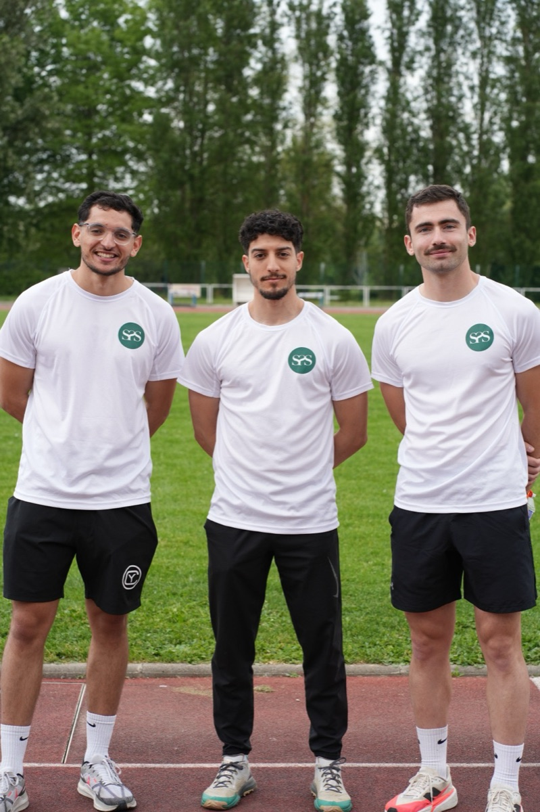
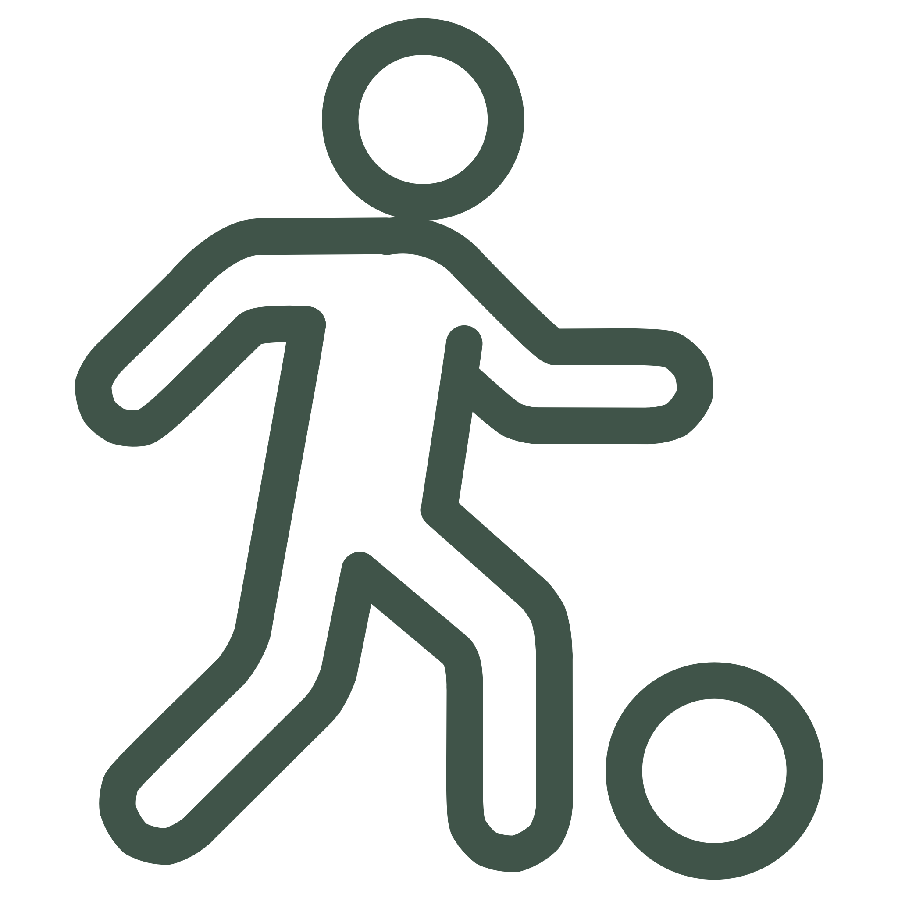
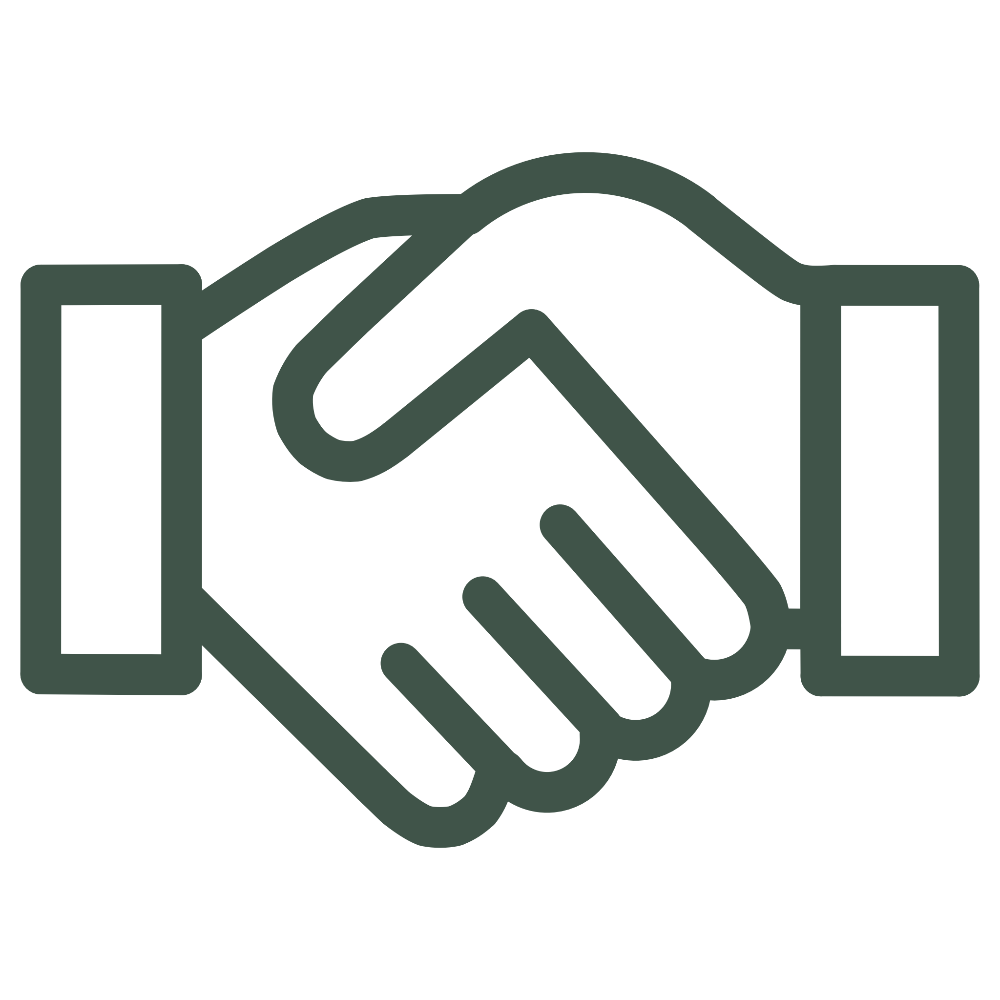
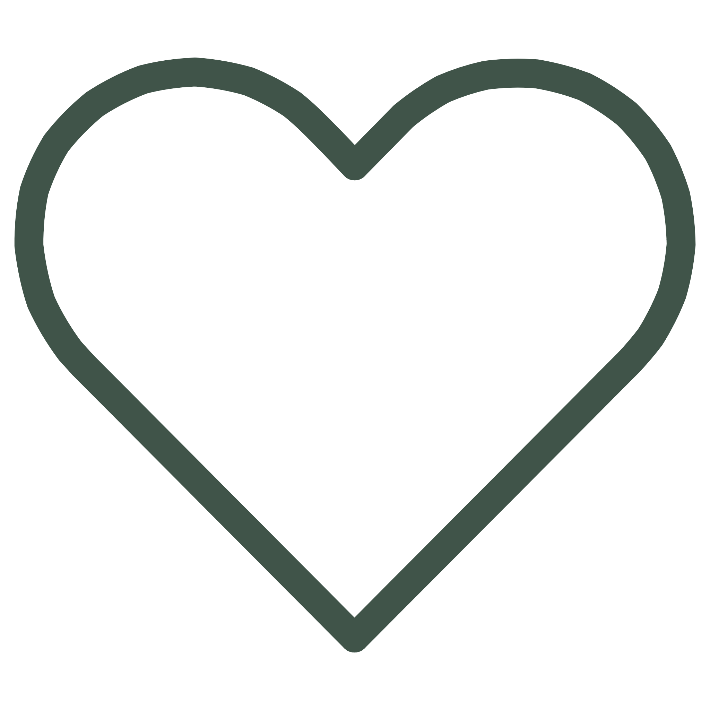
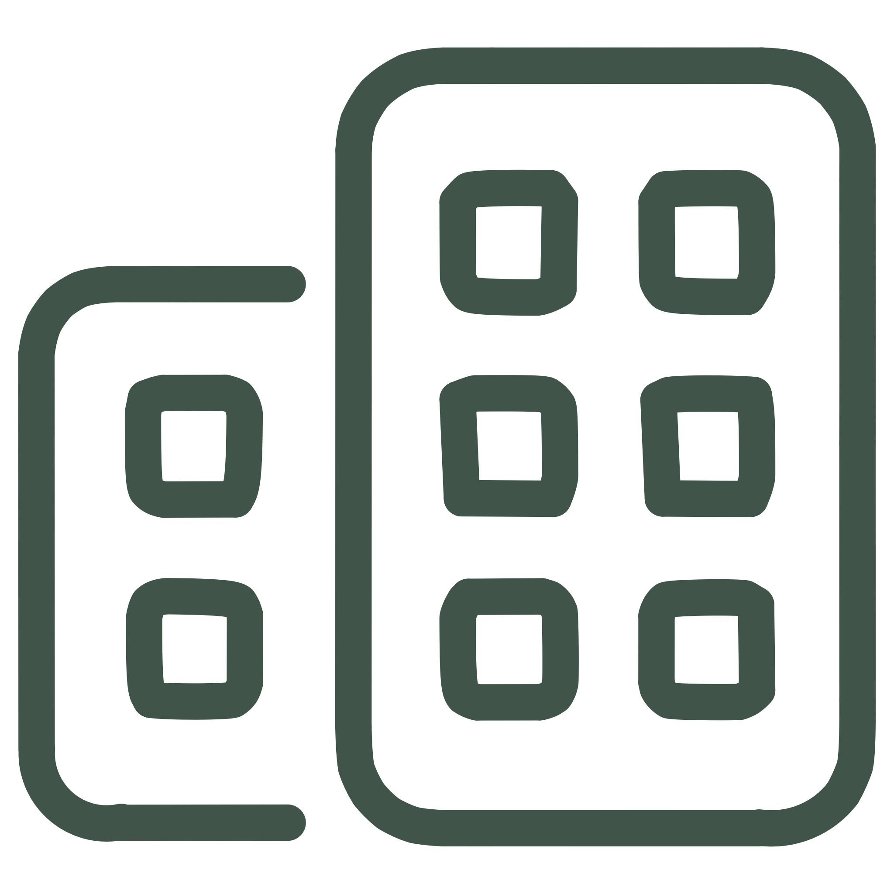

SportPaixSanté L'éducation pour la paix au cœur de nos actions
SPS corrèle la santé et le sport tout en faisant la promotion de l'éducation à une culture de paix, pour faire de l'autre un partenaire et non un adversaire.

Chez SPS, le sport et l'activité physique sont un vecteur d'action et de transmission pour l'éducation aux valeurs universelles.
C'est un moyen de renforcer le vivre-ensemble par le faire-ensemble, à travers la considération de tout un chacun, quelle que soit sa différence.
SPS s'engage à contribuer socialement afin de sensibiliser chaque individu à développer sa conscience, pour être en paix avec les autres, avec son environnement et avec soi-même.
Trois axes,
trois couloirs
Trois axes qui s'incarnent dans chacune de nos interventions, des terrains aux salles de classe.

Sport
Accompagner la jeunesse pour la sensibiliser à la pratique d'une activité physique et lutter contre toute forme de sédentarité.

Paix
Développer et transmettre une éducation de culture de paix et de vivre-ensemble, pour faire de l'autre un partenaire et non pas un adversaire.

Santé
Éveiller chaque individu à se préoccuper de son corps et de sa santé, face aux problématiques actuelles liées à la sédentarité et aux enjeux globaux.
Les piliers
de SPS
Quatre piliers structurent notre projet associatif et se renforcent mutuellement.
Sport
Ateliers, manifestations sportives, tournois et courses de sensibilisation autour des différentes pratiques du sport.
Paix
Utiliser la compétition comme forme d'élévation de soi et de l'autre, en agissant non pas l'un contre l'autre, mais l'un avec l'autre.
Santé
Prévenir et lutter contre la sédentarité, promouvoir le bien-être physique et mental par l'exercice physique.
Éducation
Le fil conducteur : transmettre, sensibiliser et éveiller dès le plus jeune âge, de l'entrée à l'école jusqu'aux associations sportives.
Là où nous
intervenons
Des services adaptés à vos besoins sportifs et socio-culturels, avec pour finalité la paix individuelle et collective.
-

En entreprise
Team building, formation des managers, tables rondes et plans anti-sédentarité.
-
Écoles & centres sociaux
Interventions auprès des élèves, jeux d'équipe et journées tournois sur le thème de la paix.
-
Clubs & associations sportives
Accompagnement des éducateurs et activités fondées sur l'entraide et la création de liens.
Envie de faire
équipe avec nous ?
Établissement scolaire, entreprise, club ou simple curieux : parlons de ce que SPS peut construire avec vous.
Ou écrivez-nous directement : contact.sportpaixsante@gmail.com